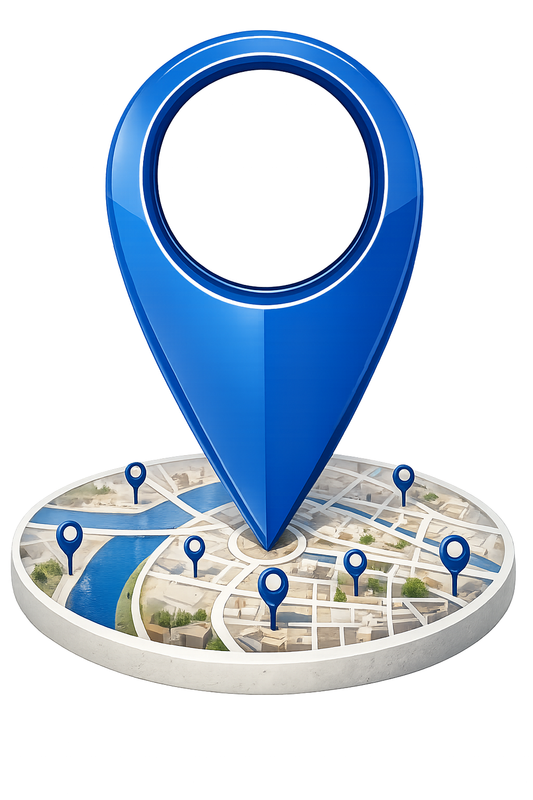

Guide Local
Découvrez facilement les lieux importants de votre ville et trouvez rapidement les services essentiels autour de vous.
Lieux
Guide Local est une plateforme qui permet de découvrir facilement les lieux importants d’une ville. Elle aide les utilisateurs à s’orienter et à trouver rapidement des endroits essentiels comme les universités, les hôpitaux et les marchés.

Lieux les plus visités
Les lieux que les visiteurs du site recherchent le plus